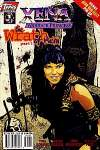
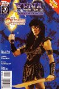
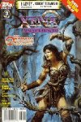
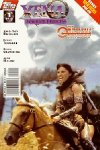

Xena Comic Books
NEWS!
I will be updating this page soon, as soon as I can, with information on the new Xena series from Dark Horse. In the meantime, please check out Dark Horse's website: http://www.dhorse.com/ for up-to-date information!
Site Index
Introduction
Or, Why I Made This Page
Xena is a very popular show right now, which means that it has given us a few spin-offs. One place Xena has spun into is the comic books.

For those not in the know, comic books are a form of storytelling that combine words with art.
They are halfway between your average book and your average TV show. Their advantage over other media is that they are very portable, can be read repeatably, and sometimes they turn into collector's items...
Xena comics, naturally, jumped to the top of comic collectables. Fortunately, Topps Publishing, who was putting them out, also kept in mind the comic book reader, and the stories turned out were pretty darned good.
Unfortunately, Topps also bowed to the collecting market, putting out the same comic books with multiple variations of covers. Complicating things was the fact that Topps was often late in putting out their books. Readers never knew when the books will come out. This made it difficult to track the comics, and the massive confusion which resulted led to me creating this page.
Xena Comic Books Overview
Topps Comics
The Topps Xena comic book series was actually made up of a series of mini-series.
- The first series is called simply Xena: Warrior Princess and consisted of three issues: 1, 2, and 0. Issues 1 and 2 had a two part main story, issue 0 was a stand-alone story, and a backup story ran through all three issues. All three issues had multiple covers; issue one had three. The entire series was reprinted in the second Xena Trade Paperback.
- The second series is called Joxer: Warrior Prince and had three issues: 1-3. It focused on Joxer. All three issues had multiple covers, one art and one photo.
- The third series is called Xena and the Dragon's Teeth and had three issues: 1-3. All three issues will have multiple covers, one art and one photo.
- The fourth series is called Callisto and had three issues with multiple covers. The first issue had three covers.
- The fifth series is called Orpheus and had three issues with multiple covers.
- The sixth series is called Bloodlines and had two issues with multiple covers.
- The seventh series is called The Original Olympics and had three issues with multiple covers.
- A one-shot special called The Wedding of Xena and Hercules came out in August 1998. The art cover is by well-known comic book painter Alex Ross.
- The eighth series is called The Wrath of Hera and had two issues with multiple covers.
In addition, the Topps comic book version of Xena has shown up in:
- Hercules: The Legendary Journeys #3-5, which was reprinted in the first
Xena Trade Paperback (Xena: Warrior Princess 1st Appearance Collection).
- Two TV Guide special mini-comics (one promoting Hercules, the other promoting Xena).
The Hercules mini-comic was reprinted in the first Xena Trade Paperback.
The Xena mini-comic was reprinted in the second Xena Trade Paperback.
- Xena: Warrior Princess: Year One, an exclusive comic available through American Entertainment (and promoted via TV Guide).
- The Official Xena Magazine, issues 1, 2 and 4 all had short Xena Comics. Issue #2 features the first comics appearance of Callisto.
- The Official Hercules and Xena Yearbook had a short Xena comic, sequel to the Xena appearance in the original Hercules comic book.
Dark Horse Comics
Dark Horse produced its first Xena story for the 1999 Dark Horse Presents Annual. A second short story appeared in Dark Horse Presents #148. Another short was serialized in Dark Horse Extra (in strip format) #18-20. The regular series, woven into the shows continuity, started in September.
Checklist of Official Xena Comic Books
Battle On
Last but not least, there is one more Xena comic item of note. Battle On is an on-line, weekly comic strip based on Xena. This truly twisted strip pokes gentle fun at the show from the perspective of a true fan. Drawn by artist Jeanette Atwood and archived for your pleasure, these are a must-see for the Xena comic fan.
Disclaimer
This website, its contents, and the code used to produce them are copyright © 1998 by Laura Gjovaag. All rights reserved. Eskimo North is my service provider, and has no responsibility or jurisdiction whatsoever over this site except for the terms of our service agreement, nor do I speak for or represent Eskimo North in any manner.
No material from this website may be reproduced, in whole or in part, by electronic, mechanical, or other means, without permission of Laura Gjovaag, with the exception of cache files on your own, individual machine for ease in using and enjoying this site.
Many graphics on this site are from Topps Comics and Topps Comics retains the full copyright and all other related rights with regards to such graphics. All attempts have been made to keep the use of copyrighted works within fair use parameters. I will not provide additional/larger graphics, so please do not ask. Any non-Topps graphics are copyright © 1998 by Laura Gjovaag unless otherwise indicated.
All characters, related names and indicia are trademarks of Topps Publishing and/or MCA Television. This site and its maintainer are in no way affiliated with Topps Publishing and/or MCA Television.
The goals of this page:
- To list all Xena comic books, including cover variations.
- To give quick overviews and reviews of each comic story, listing all credits.
- To display and critique samples of the art on and in Xena comics.
- To act as a source of information for future, past, and current Xena comics.
Checklist of Xena (and a little bit of Herc) comic books
This list was compiled by Laura Gjovaag.
Click on the title for more information, including an overview and review of the story,
cover scans of all variant covers, and art samples from all stories
Xena Comics by Topps:
Xena Comics by Dark Horse:
- Dark Horse Presents Annual: DHP Jr. August 1999 (features a Xena Story)
- Xena Warrior Princess #1 September 1999 - (Two covers: art and photo)
- Xena Warrior Princess #2 October 1999 - (Two covers: art and photo)
- Xena Warrior Princess #3 November 1999 - (Two covers: art and photo)
- Dark Horse Presents #148 November 1999 - (one story in an anthology)
- Xena Warrior Princess #4 December 1999 - (Two covers: art and photo)
- Xena Warrior Princess #5 January 2000 - (Two covers: art and photo)
Xena Comic Book Cover Gallery
Upcoming Xena Comics:
- Xena: Warrior Princess #6 23 Feb 2000
- Xena: Warrior Princess #7 29 Mar 2000
- Xena: Warrior Princess #8 26 Apr 2000
- Xena: Warrior Princess #9 31 May 2000
- Xena: Warrior Princess - The Way of Death TPB 14 Jun 2000
Visit Dark Horse Comics and do a search on Xena for more detailed previews (including cover art!).
Early Hercules Comics ---
Hercules #3-5 ---
Xena Specials ---
First Xena Mini ---
Second Xena Mini (Joxer) ---
Third Xena Mini (Dragon's Teeth) ---
Fourth Xena Mini (Callisto) ---
Fifth Xena Mini (Orpheus) ---
Sixth Xena Mini (Bloodlines) ---
Seventh Xena Mini (Olympics) ---
Eighth Xena Mini (Hera)
Xena Magazine ---
Xena Comic Cover Gallery
Xena Comic Book News
10 Aug 1999 - Check your stores for the Xena story in the Dark Horse Annual starting tomorrow!
12 May 1999 - The Dark Horse Presents Annual will feature a Xena story. The book is due out in August.
22 Feb 1999 - DC is still interested in doing a Wonder Woman/Xena crossover, and are apparently in negotiations with Dark Horse.
4 Dec 1998 - Rumor has been confirmed! Dark Horse will indeed by putting out the official Xena comic book sometime later this year. Please visit the Dark Horse Comics website for more up-to-date information. Dark Horse is home of the award winning Concrete series, and has also put out such gems as Fax From Sarajevo and Harlan Ellison's Dream Corridor. They also publish the wildly popular Star Wars comic books, and lately have started publishing Buffy the Vampire Slayer. All things considered, I can't think of a better home for Xena.
If you know of any Xena comic story I've missed, or know some tidbit of Xena comic news,
e-mail me at realtegan@excite.com (Laura Gjovaag) and let me know.
Links
The Official Xena Site would be a good place to start.
--- --- ---
Dark Horse Comics will be publishing Xena in the near future.
If you want up-to-date information, bookmark and check out this page.
--- --- ---
New Comics Release List
Check here to see when the latest Xena book is out. Upcoming comics list usually goes a couple weeks into the future.
--- --- ---
Xena Action Figure Scrapbook
A fan who has done with the many Xena action figures what I've been trying to do with the comic books. Worth a long look or two.
--- --- ---
Gabrielle's Place has comics information.
Check out the Gabby Goods section for
information on and pictures of the comics and action figures.
--- --- ---
The Offical Renee O'Connor Fan Club
I'm a member, of course. Gabrielle is the reason I'm a fan.
--- --- ---
Gabbygab and Mariner's Look at Xena
A great, if crowded, site with lots of information...
--- --- ---
Aida's Xena:Warrior Princess Page.
An informative site, with links and awards. Check it out!
--- --- ---
Tom's Comprehensive Xena Page
There's no need to link to anyone else, because Tom's Links Page has got them all...
Also the home of the Battle On Comic Strip.
--- --- ---

Member of the Comic Sites Alliance
--- --- ---

--- --- ---
Awards
This section is for the many awards we get! ...Ok. For the one we've gotten so far.


Any further questions, comments, suggestions, or insults should be directed to
realtegan@excite.com (Laura Gjovaag).
This page is owned and updated by Laura Gjovaag, who thinks Gabrielle kicks booty.
This page was first created 3 Oct 1997. Go Dark Horse Comics!
No comics were harmed in the making of this website.